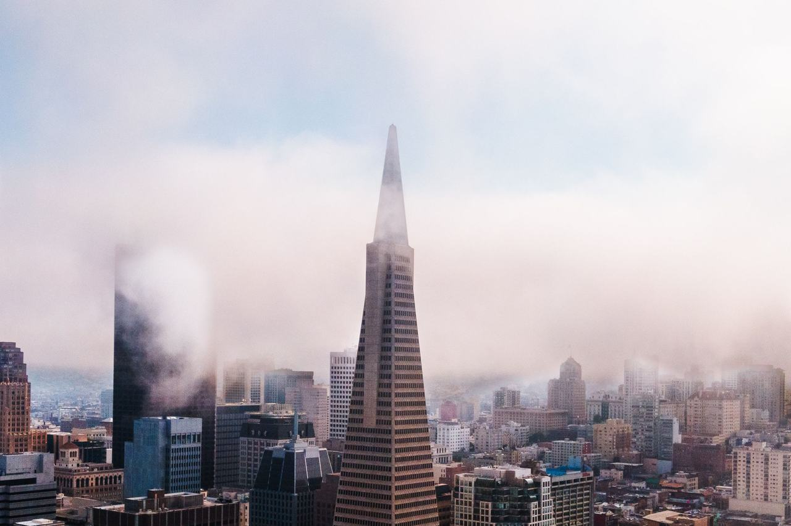

Financial District
The office district north of Market Street, in the city's Financial District/South Beach analysis neighborhood. Coverage here begins with addresses named in John S. Hittell's 1878 history of the city and in The Argonaut.

Map
Named buildings and landmarks
-
1
-
2
-
3
-
4

-
5
-
6
-
7
-
8

-
9
-
10

-
11

-
12

Also here: Hobart Building, The Sharon Bldg, One Bush Plaza, J. W. Burdette Building, "The Allegory of California" Mural, Jones-Thierbach Coffee Company Building, Wells Fargo Building, Mills Building, Transamerica Redwood Park, Atlas Building, Sun Building, Brandenstein Building, Crossley Building, Kentfield and Esser Building, Metropolis Trust & Savings Bank, Morgan Building, Stacy's Bookstore, Marwedel Building, St. Clair Building, Warring-Wilkinson Building, Heineman Building, Standard Varnish Works, Schwabacher Building, Langley and Michaels Building, Santa Fe Building/West Coast, Southern Pacific Building, Asian American Bank Building, Exchange Building, C.C. Moore Building, Market St. Railway substation, Palace Garage, Chancery Building, Finance Building, PG&E Station J, Financial Center Building, American International Building, Lurie Building, John Hancock Building, Bethlehem Steel Building, 2 towers: 20 & 30 stories, 50 Beale Street, Folger Coffee Building, Bank of America World Headquarters, One California, 100 Pine Center, Transamerica Pyramid, Union Bank Building, 1 Metropolitan Plaza, 188 Spear Street, First Market Tower, One Front Street, Providian Financial Building, One Ecker Square, One Sansome Street (Citigroup Center), 456 Montgomery Plaza, Bayside Plaza, 345 California Center, 49 Stevenson, Embarcadero Center West, 343 Sansome Street, Gap Building, 55 Second, Babcock & Wilcox Warehouse, 350 Mission Street, 350 Bush Street, Park Tower at Transbay, Matson Building, Neustadter Brothers Building, Pacific Gas & Electric Company General Office Building, Printing Arts Building.
Streets documented so far
- Battery Street
3 buildings, built 1924–1989. - Bush Street
4 buildings, built 1959–2018; 1 in the Market Street Cultural Landscape District. - California Street
10 buildings, built 1959–2000; 2 in the Front-California Conservation District. - Clay Street
1 building, built 1906; 1 in the Chinatown Historic District. - Commercial Street
1 building; 1 in the Chinatown Historic District. - Dashiell Hammett Street
2 buildings, built 1912; 2 in the Lower Nob Hill Apartment Hotel Historic District. - Davis Court
1 building, built 1966. - Davis Street
1 building, built 1927; 1 in the Northeast Waterfront Historic District. - Drumm Street
1 building, built 1912. - Embarcadero Center
1 building, built 1979. - Front Street
1 building. - Grant Avenue
1 building, built 1913; 1 in the Chinatown Historic District. - Leidesdorff Street
1 building, built 1925; 1 in the Commercial-Leidesdorff Conservation District. - Lombard Street
1 building, built 1904. - Market Street
1 building, built 1981. - Merchant Street
1 building, built 1922; 1 in the Chinatown Historic District. - Mission Street
1 building, built 1922; 1 in the New Montgomery-Mission-Second Street Conservation District. - Montgomery Street
The Crocker Bank Building of 1908, and three buildings on and beside the block where Samuel Brannan built in 1853. - Pine Street
2 buildings, built 1971–1991. - Post Street
The Mechanics' Institute, on the lot the Institute bought in 1866. - Sacramento Street
1 building, built 1912. - Sansome Street
2 buildings, built 1983–1991. - Sutter Street
1 building, built 1983. - Vinton Court
1 building, built 1923; 1 in the Chinatown Historic District. - Washington Street
1 building, built 1900.
Parks and public spaces
- Chapel Grove
Neighborhood park or playground, 2.7 acres. - Cityside Parks
Neighborhood park or playground, 6.6 acres. - Embarcadero Plaza
Civic plaza or square, 4.1 acres. - Maritime Plaza
Civic plaza or square, 2.0 acres. - Portsmouth Square
Neighborhood park or playground, 1.5 acres. - St. Mary's Square
Civic plaza or square, 1.4 acres. - Sue Bierman Park
Neighborhood park or playground, 4.5 acres. - Treasure Island Landing
Neighborhood park or playground, 2.3 acres.
Historic districts here
- Chinatown Historic District
- Commercial-Leidesdorff Conservation District
- Front-California Conservation District
- Jackson Square Historic District
- Kearny-Belden Conservation District
- Kearny-Market-Mason-Sutter Conservation District
- Lower Nob Hill Apartment Hotel Historic District
- New Montgomery-Mission-Second Street Conservation District
- Northeast Waterfront Historic District
- Pine-Sansome Conservation District
- Telegraph Hill Historic District
Adjacent neighborhoods
Chinatown adjoins west across Kearny Street, with North Beach beyond it to the north-west and Nob Hill up the grade. Union Square holds the retail blocks west of Kearny; across Market Street are the East Cut and South of Market.